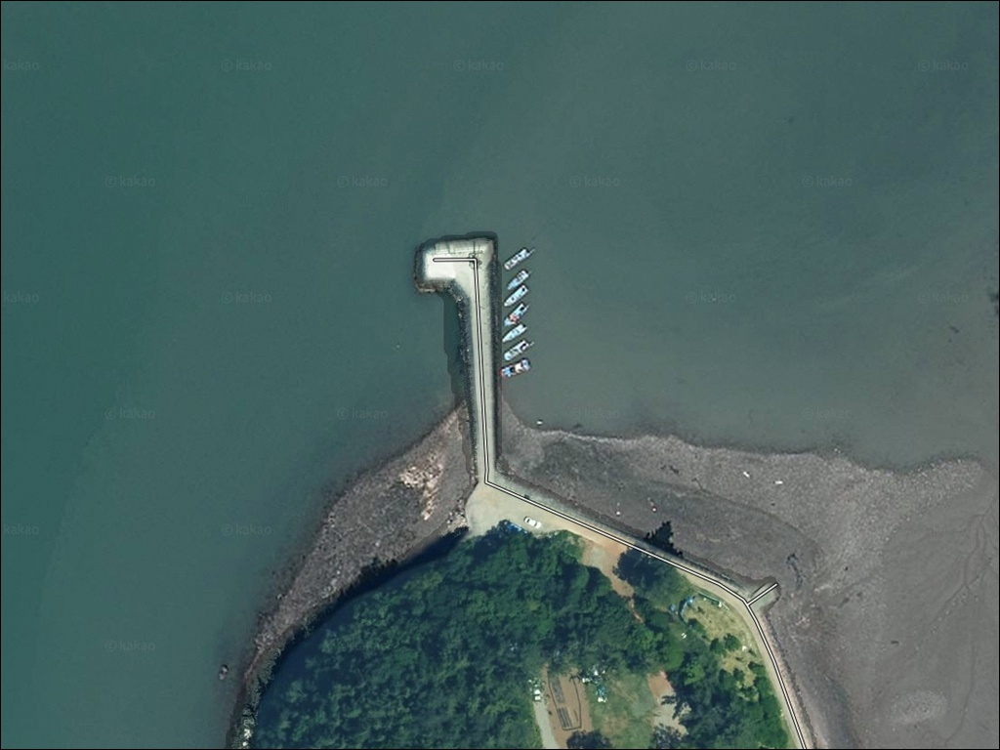
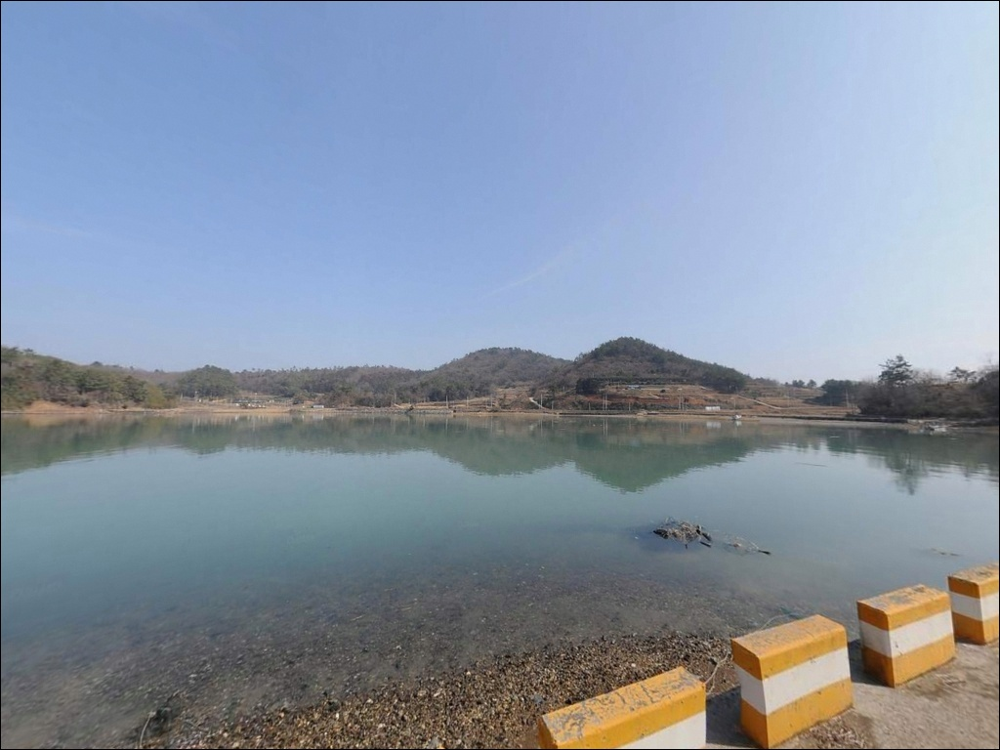
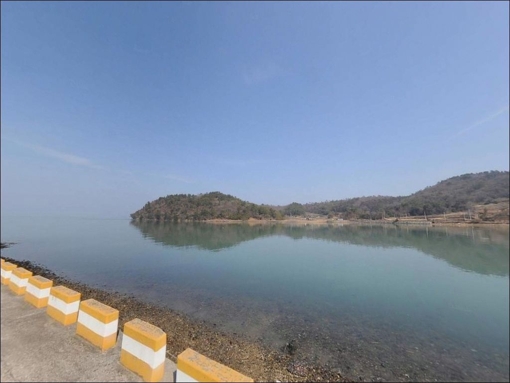
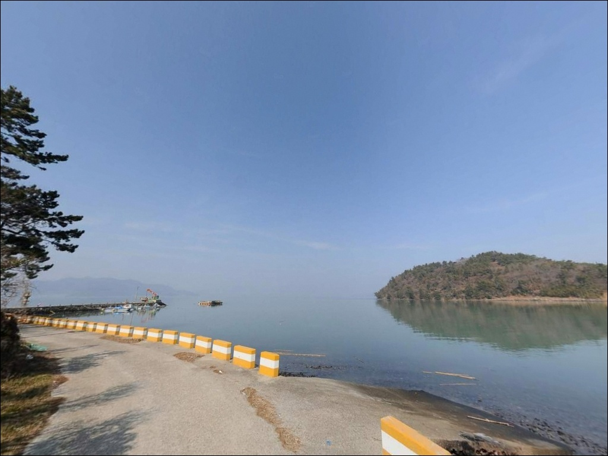
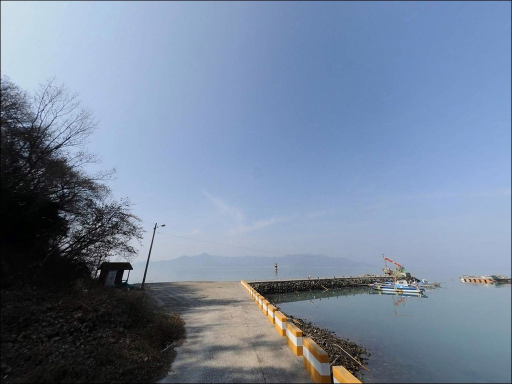
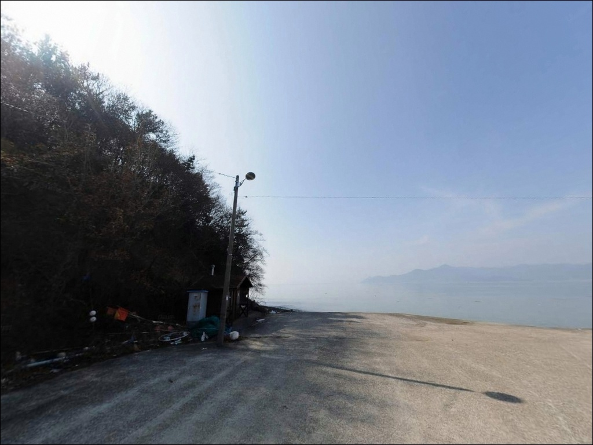
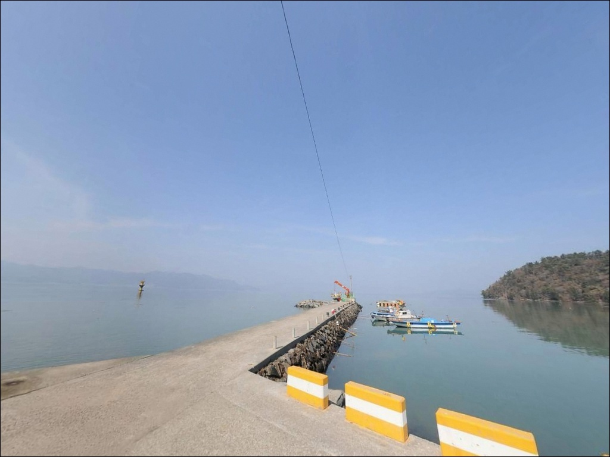
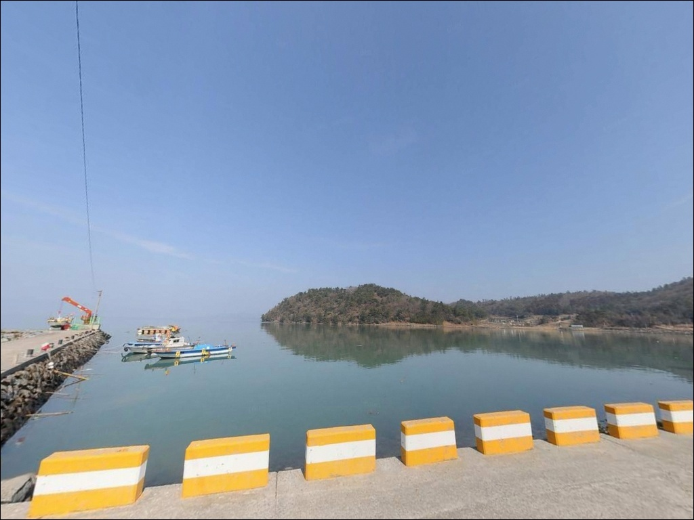
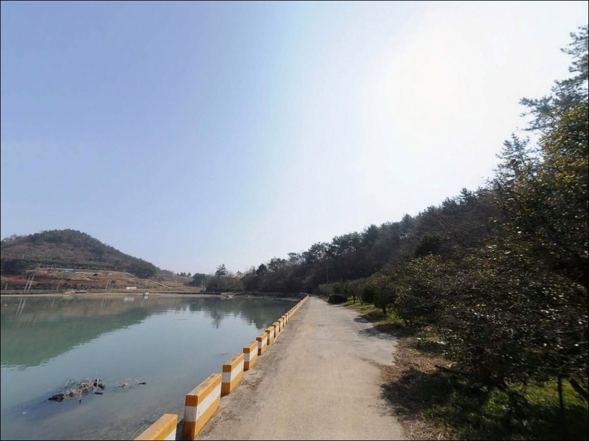

고흥 대금리방파제 간조에는 바닥 드러나니 들물 시간부터 노려본다
이 페이지에는 광고(제휴 링크 포함)가 있으며, 광고 링크를 통해 구매하면 운영자가 판매 수익 또는 수수료를 받을 수 있습니다. 포인트 사진: 카카오맵 스카이뷰·로드뷰. 이 페이지의 지도·사진 이미지는 카카오맵의 실제 서비스 이미지와 다를 수 있습니다.


포인트 안내
대금리방파제
전남 고흥군 두원면 대금리 산 23
물때 확인 없이 대금리방파제를 찾으면
간조 전후 수심이 급격히 낮아져
어떤 채비를 써도 유효 공략 지점이 없어집니다.
득량만 내만 특성상 조류가 빠지는 시간대와
들어오는 시간대의 낚시 여건 차이가 크기 때문에,
물때 계산이 출조 성패의 절반을 결정하는 포인트입니다.
두원면 해안 서측, 득량만 안쪽에 자리한
대금리방파제는 외해에 직접 노출되지 않는
반폐쇄형 만 구조입니다.
파도와 바람의 영향이 상대적으로 작고
조류 흐름이 완만한 편이라,
원투와 찌낚시 중심의 생활낚시에
잘 맞는 지형 조건을 갖추고 있습니다.
이 글은 대금리방파제의 진입 동선,
차박 여건, 물때 판단 기준,
낚시 스타일별 공략 조건에 집중합니다.
조황 단정이나 특정 어종 보장은
이 글의 범위에 포함되지 않습니다.

1. 진입 동선과 포인트 접근성
대금리방파제는 두원면 대금리 마을에서
해안 방향으로 내려가는 도로를 따라
차량 진입이 가능합니다.
도로 폭은 마을 내부 구간까지는 왕복 교행이
가능한 수준이며,
방파제 직전 해안 지선 도로는
폭이 좁아 저상 차량은 노면 상태를
사전에 확인하는 편이 좋습니다.
방파제 입구 인근에 소규모 해안 공터가 형성되어 있어
회차는 가능한 구조입니다.
승용차와 SUV 정도 크기라면
진입과 회차 모두 무리 없는 수준이며,
대형 캠핑카나 장축 밴 차량이라면
진입 전 위성지도로 도로 폭과
회차 공간을 먼저 살펴두는 것이 안전합니다.
주차는 방파제 초입 도로변과
인근 해안 공터를 활용하는 방식이 일반적입니다.
어선 입출항 동선과 시설물에 접촉하지 않는
자리가 기본 원칙이며,
방파제 위 직접 주차는 현장에서
공간 여부를 확인한 후에 판단합니다.

2. 차박 환경과 야간 체류 여건
대금리방파제에서의 차박은 방파제 위보다
인근 해안 도로변 공터를 활용하는 형태가
현실적입니다.
민가와 일정 거리가 떨어져 있어
야간 프라이버시는 양호한 편이며,
차량 통행도 많지 않아
낚시 후 짧게 머무는 간단 체류형 차박에는
나쁘지 않은 환경입니다.
야간 가로등은 최소 수준으로,
방파제 전 구간을 밝히는 조명은 기대하기 어렵습니다.
개인 헤드랜턴과 보조 랜턴은 필수이며,
발판 미끄럼 주의도 각별히 필요합니다.
득량만 내만 구조라 외해에 비해
파도와 바람의 직접적인 영향은 작은 편이지만,
기상 악화 시 노출 정도가 달라지므로
출발 전 기상 확인은 기본입니다.
방파제 옆보다는 해안 도로변 넓은 공간에
차량 뒤쪽을 바다 방향으로 두는 배치가
소음과 프라이버시 모두에서 유리합니다.
민가 골목 쪽은 피하고
해안 공터 활용이 먼저입니다.


3. 주변 편의시설 및 인프라 현황
대금리방파제 반경 1km 이내에서
편의점이나 식당을 기대하기는 어렵습니다.
소규모 농어촌 취락 특성상
기본 생활 인프라는 완전 자급 체제로
준비하는 것이 현실적입니다.
식수, 얼음, 낚시 소품, 연료 모두
출발 전에 갖춰야 합니다.
반경 3km권의 두원면 소재지 방향으로
이동하면 소형 상점과 생활 인프라를
이용할 수 있는 권역에 닿습니다.
같은 두원면 내 대전해수욕장 인근에도
관광·휴식 기능과 연계된 소규모 상권이
분포해 있어, 출조 전 준비 동선으로
두원면 소재지를 거쳐 진입하는 방식이
효율적입니다.
반경 10km 내에는 고흥읍이 위치하여
편의점, 마트, 병원 등 대형 인프라를
이용할 수 있습니다.
응급 상황이나 부족한 장비가 생겼을 때
이동 기준이 되는 거리입니다.

4. 낚시 여건이 달라지는 물때 — 진입 전 반드시 확인해야 할 사항
대금리방파제 방문 전 가장 먼저 확인할 것은
물때입니다.
득량만 내만 특성상 간조 시 수심이
급격히 낮아지는 구조이며,
간조 직전과 직후에는 낚시 효율이
크게 떨어집니다.
바다타임에서 두원면 기준 물때를 확인하고
들물 타이밍 전후로 입장 시각을
맞추는 것이 기본 전략입니다.
만조 전후 2~3시간이 이 포인트에서
집중 공략 시간대입니다.
득량만 내만 방파제는
들물 타이밍에 따라 낚시 가능 시간대가
결정되는 포인트입니다.
기상 변화 속도가 빠른 해안 지역 특성상
당일 아침 기상청 예보를 다시 확인하는 것이
무의미한 출조를 막는 조건입니다.
암반 구간 특성상 채비 손실이 생길 수 있으므로
여분 채비를 넉넉하게 준비하고,
외항 테트라포트 구간에서는
전용 신발과 구명조끼 착용이 기본입니다.
마을 어항 구조상 어선이 드나드는 공간입니다.
선박 운항 시 낚시를 잠시 중단하고
어구와 시설물 손상에 주의하는 것이
기본 매너입니다.

5. 지형 기반 낚시 여건 분석
대금리방파제가 자리한 두원면 해안은
득량만 내측에 해당하는 내만형 해역입니다.
외해에 직접 노출되지 않는 반폐쇄형 구조이므로
조류 흐름은 완만한 편이며,
수심은 내항 쪽이 얕고
방파제 외항 끝단 방향으로 갈수록
수심이 점진적으로 깊어지는 구조입니다.
방파제 외항 콧부리 구간은
내항보다 수심이 깊고 조류 변화가 뚜렷해
원투와 찌낚시 채비가 힘을 발휘하는 자리입니다.
바닥은 모래와 펄이 섞인 내만 전형적 구조이며,
방파제 끝단과 석축 주변 일부 구간에는
암반·여밭이 섞이는 경향이 있어
루어 탐색 포인트도 형성됩니다.
간조 시 수심이 급격히 낮아지는 내만 특성상
조황 검색은 출조 전 필수입니다.
출조 전 "고흥 두원면 방파제 조황"
또는 "고흥 득량만 낚시"로
최신 조황을 꼭 검색해 보시기 바랍니다.


6. 포인트에 어울리는 낚시 스타일
원투낚시가 이 포인트 지형에 가장 잘 맞는 방식입니다.
방파제 외항 방향으로 채비를 멀리 보내
바닥층을 탐색하는 구성이 기본이며,
들물 타이밍에 집중해
수심이 한 번 꺾이는 지점을
중장거리로 노리는 방식이 이 포인트에 어울립니다.
감성돔, 도다리, 붕장어를 기대해 볼 수 있는
득량만 전형적인 공략 방법입니다.
찌낚시도 이 포인트 구조에 맞는 스타일입니다.
내항과 외항이 만나는 코너부, 배가 드나드는
수로 라인 주변에 조류가 모이는 구간이 형성됩니다.
만조 전후 반유동 또는 전유동 채비로
방파제 벽면 근처를 공략하는 방식이
이 구조에 잘 맞습니다.
감성돔과 볼락을 주력으로 두는 낚시인에게
어울리는 선택입니다.
에깅과 루어낚시도 병행 가능합니다.
방파제 석축 주변과 암반이 섞이는 구간에서
갑오징어 에깅 채비가 성립하는 지형 조건이며,
득량만 전역이 갑오징어와 문어 포인트로
알려진 해역 특성을 그대로 갖습니다.
야간에는 방파제 구조물 주변에서
소형 지그헤드 채비로 볼락을 노리는
라이트게임도 유효한 스타일입니다.
민장대 한 대로 학꽁치와 숭어를 즐기는
현지인형 여가낚시도 만조 전후에 가능한 포인트입니다.

7. 대안 포인트와 플랜 B 동선
대금리방파제의 물때 여건이 좋지 않거나
주차 공간이 여의치 않을 때
첫 번째 대안은 같은 두원면 내
고흥만 방조제 풍류리 선착장 구간입니다.
방조제 전역에서 원투와 릴찌낚시가 가능하고
주차 여건이 대금리보다 넓은 편입니다.
감성돔·도다리·숭어·학꽁치 실적이 확인된
현지 생활낚시터로 알려진 곳입니다.
규모가 있는 포인트를 찾는다면
도양읍 신흥방파제가 두 번째 대안입니다.
외항 전역이 포인트 역할을 하는 구조이며,
대금리보다 방파제 규모가 크고
접근성이 양호한 편입니다.
감성돔과 갑오징어 조과가
확인된 구간입니다.
차박 위주 플랜 B라면
두원면 대전해수욕장 인근 해안이
가장 현실적인 이동 목적지입니다.
해수욕장과 주차장이 결합된 구조로
주차 공간이 대금리보다 넓고,
낚시 후 바다를 보며 하룻밤 머물기 좋은
환경을 갖추고 있습니다.

물때 하나 맞추면
대금리방파제가 달라 보입니다
원투낚시나 찌낚시를 즐기는 낚시인이라면
대금리방파제의 지형 조건은
잘 맞는 구조입니다.
조류가 완만하고 파도 영향이 적은
득량만 내만 환경은 채비 컨트롤이 수월하고,
에깅과 라이트게임까지 복수로 운용할 수 있어
다양한 스타일을 시도하기 좋은 포인트입니다.
반면 물때 확인 없이 간조 시간대에 진입하거나
편의시설을 기대하고 방문하면
낚시와 체류 모두 불편한 상황이 됩니다.
물때 확인, 자급 준비, 진입로 사전 점검,
이 세 가지를 갖추고 간다면
조용한 득량만 안쪽에서
생활낚시를 온전히 즐길 수 있는 포인트입니다.
낚시를 마치고 해안 공터에 차를 세운 채
득량만을 바라보며 하룻밤 머무는 형태로
낚시와 차박을 함께 즐기기에
조용하고 부담 없는 포인트입니다.